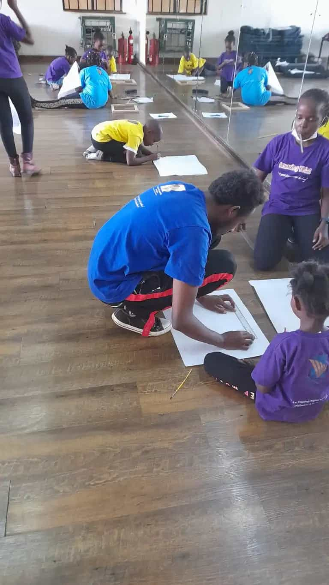

Painting, games, learning, fun and games were all the highlights of this day. Follow along to experience it too, through us of course🙂.
Did you know that King Saul was Israel's first King? This we learnt during the devotion in the morning. However, the main theme was on his success and failure. How after being so renown and praised by his people he fell due to his disobedience towards God.
Did we mention we played some games?
A lot of games.
We even played musical chairs.
Still continuing with our theme on money, we learnt Money Comes To Those Who Wait. That is, having patience when finances are involved and most importantly avoiding the Buy Now Pay Later Mentality which could lead to a rabbit hole of debts in future.
To challenge ourselves if we had surely learnt something from the lesson, we had this discussion.
All work and no play makes Jack a dull boy. We had plenty of time after to go outside, have a breather, play in the playground and field and also bond with our friends. After which we were so hungry and went ahead to take our snacks and tea back in class.
Art sessions always bring a different vibe with them. In our case, it brings out the creativity, focus, attention to detail and most importantly the team-work skills in us.
We prepared our canvases accordingly, for our first goal of the lesson
then dove straight into painting for step 2.
The day was a success. We learnt and achieved our goals for the day. Prayers from 4 amazing kids were held as we departed thereafter with our parents for home.